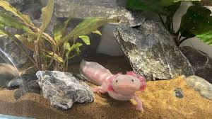
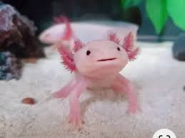

Ciclo do Aquário: Antes de colocar o axolote, o aquário precisa passar pelo processo de ciclagem por algumas semanas para desenvolver bactérias benéficas que neutralizam a amônia e os nitritos.
cuidar de um axolote, você deve garantir um aquário de no mínimo 75 litros com água fria entre 15 °C e 20 °C e filtragem de baixa correnteza. Esses anfíbios exóticos são totalmente aquáticos, têm hábitos noturnos e demandam monitoramento rígido dos parâmetros da água.
O filtro deve ser de baixa correnteza (filtros de esponja são ótimos), já que eles se estressam facilmente com águas agitadas. Forneça tocas ou tubos onde eles possam se esconder da luz

Alimentação e ManuseioDieta carnívora:
Ofereça minhocas limpas picadas, bloodworms e rações específicas para carnívoros de fundo. Eles se alimentam por sucção.Sem toque: Não manuseie o axolote com as mãos. A pele deles possui uma camada protetora sensível que se danifica facilmente.Convivência isolada: De preferência, crie-os sozinhos. Eles podem morder uns aos outros e vão comer peixes menores que caibam em sua boca
Nunca use cascalho ou pedras pequenas, pois os axolotes se alimentam por sucção e podem engolir as pedras, causando obstrução intestinal fatal. Opte pelo fundo totalmente nu (sem nada) ou use uma fina camada de areia de rio bem fina